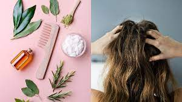
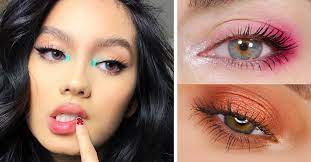
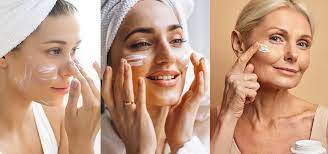

Son productos que se utilizan para resaltar la belleza femenina tanto en rostro como en distintas partes del cuerpo.

El maquillaje, es una sustancia cosmetica, que eligen muchas mujeres para expresar su individualidad y feminidad en distintas facetas. Ademas de que es una herramienta para acentuar los rasgos favoritos de cada rostro.
Base, polvo compacto, corrector, rubor, iluminador, sombra, mascara de pestañas, pinceles para el maquillaje, lapiz de ojos y labial


El cuidado del cabello comienza por su higiene. Lave los cabellos mediante masaje activo de 15 minutos, 2 ó 3 veces por semana. Elija un champú adecuado a su tipo de cabello. Si tiene caspa, elija un champú anticaspa. Use un champú que contenga sustancias que estimulen la circulación capilar (extractos vegetales, complejos vitamínicos, etc.). Realice con frecuencia masajes capilares utilizando lociones capilares que le ayuden a estimular la circulación sanguínea capilar. La unión del sol y del agua del mar acentúa que el tallo capilar se seque. Tras el baño en agua de mar, es aconsejable lavar el pelo con champús suaves con agua tibia y enjuagar con abundante agua.
Prepara bien la piel, asegurate de aplicar primer. Aprende aplicar bien la base y los correctores dependiendo tu tipo de rostro, aplica polvo fijador para sellar bien las bases del maquillaje, usa contornos para el rostro, no puede faltar el rubor en las mejillas, aplicar los iluminadores (highlight) y por ultimo un maquillaje de ojos para la ocasión.
Lo principal es protegerte contra el sol, usa bloquedor, trata tu piel con suavidad, ocupa jabones segun tu tipo de piel, ten una dieta saludable, manten una limpieza profunda y cuidado diario.
Exfolia por lo menos una vez a la semana, usa guantes al contacto con el agua y quimicos a diario, hidrata segun tu tipo de piel, limpieza profunda por lo menos una vez al mes.